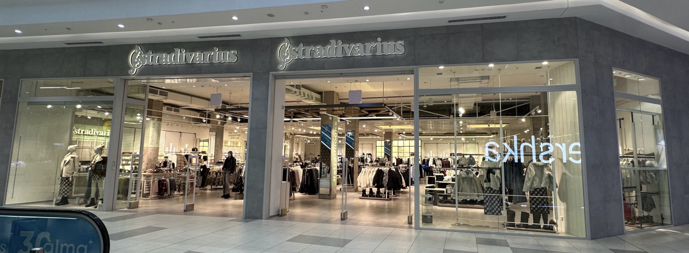

Brand History

Stradivarus, a Spanish fashion company, is known for its ladies' clothes, shoes and accessories. The brand is part of the Inditex Group, one of the world’s largest fashion retail companies. Stradivarius is modern and young in style and provides clothing for everyday wear and current fashion trends. Established in 1994 in Barcelona, Spain. Stradivarius originally started as a family-owned fashion business and later became part of Inditex. The brand has stores in numerous countries and sells its products in its online store too. Usually, a Stradivarius shop will offer various compartments of clothes, footwear and accessories. Customers can go to the shop to view the products, sizes and to try clothes before buying. In my website project, I will be concentrating on a "real-life" Stradivarius shop. I will use my own images and data and will gather actual data from the store including location, hours, products and pricingThe brand is named after a violin maker, and a detail in its logo — a treble clef — refers to the musical origin of the name.
.jpg)